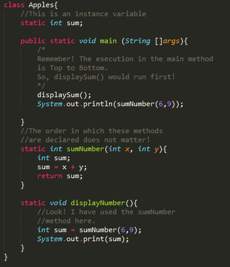

There are two types of variables in Java. These are local variables and instance variables.
Local variables are created when the method is entered and the variable will be destroyed once it exits the method.
Instance variables are declared in a class, but outside a method. This will be elaborated further in the last module specifically the access modifiers: public, private, and protected. (click)

Furthermore, you can actually use a method from another method.
